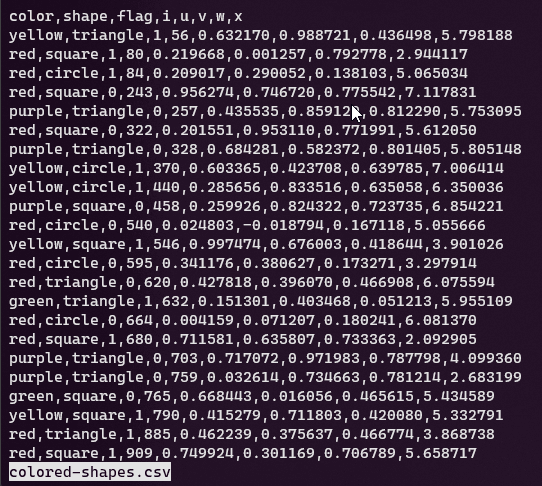

Esplora¶
In questo spazio facciamo riferimento a dati che sono archiviati come testo, una modalità molto diffusa (si pensi ai formati JSON, XML, CSV, TTL, YAML, ecc.) e per la quale gli strumenti a riga di comando hanno supporto nativo: si aspettano stringhe di testo come input.
Tanti strumenti di base e nativi sono impareggiabili nell'esplorare file di testo, in termini di rapidità, opzioni e modalità per farlo.
Sono spesso (in modo evidente) più comodi della gran parte di quelli con interfaccia grafica.
Visualizzare¶
Uno dei modi per conoscere un file è quello di visualizzarne i contenuti. Queste sono alcune delle utility classiche per farlo nel terminale.
cat¶
L'utility tipica è cat che "stampa" a schermo uno o più file (in questo caso concatena e stampa).
Se si vuole visualizzare il file colored-shapes.csv, il comando è semplicemente:
Vengono però stampate a schermo tutte le righe, e con file molto grandi può essere un po' lento e sopratutto poco informativo, perché non si leggerà l'intestazione che in alcuni formati (come i CSV) è un elemento di esplorazione dei dati prezioso.
Tip
Esiste anche la versione di cat, che consente di leggere anche file di testo compressi: zcat.
head¶
Per visualizzare soltanto le prime righe c'è l'utility head, che in maniere predefinita stampa le prime 10 righe:
head colored-shapes.csv
color,shape,flag,i,u,v,w,x
yellow,triangle,1,56,0.632170,0.988721,0.436498,5.798188
red,square,1,80,0.219668,0.001257,0.792778,2.944117
red,circle,1,84,0.209017,0.290052,0.138103,5.065034
red,square,0,243,0.956274,0.746720,0.775542,7.117831
purple,triangle,0,257,0.435535,0.859129,0.812290,5.753095
red,square,0,322,0.201551,0.953110,0.771991,5.612050
purple,triangle,0,328,0.684281,0.582372,0.801405,5.805148
yellow,circle,1,370,0.603365,0.423708,0.639785,7.006414
yellow,circle,1,440,0.285656,0.833516,0.635058,6.350036
Con l'opzione -n numeroDiRighe è possibile scegliere il numero di righe da visualizzare:
head -n 3 colored-shapes.csv
Per un formato come il CSV il comando head è prezioso, perché nella gran parte dei casi restituisce una buona visione del file: qual è il separatore dei campi, quali sono i campi, qual è il separatore dei decimali (se presenti), se ci sono caratteri speciali (come le "), ecc..
tail¶
Ma è bene poter vedere anche le ultime righe, per valutare se la struttura è identica a quella di intestazione e se ci sono "strani" contenuti (alle volte purtroppo ci sono note di testo, campi calcolati).
Il comando è tail:
Di default, le ultime 10 righe; si può definire quante se ne desiderano sempre con l'opzione -n numeroDiRighe.
less¶
Un altro strumento consigliato (ce sono tanti altri), per visualizzare ed esplorare il contenuto di un file di testo è less, che consente di sfogliare il contenuto schermata dopo schermata, man mano che lo schermo viene riempito:
Alcune informazioni di base su less
- con l'o"pzione
-Ssi disabilita il world wrap - con Space si scorrono le schermate (vedi immagine sotto);
- con / si attiva la ricerca di una stringa;
- con n il risultato successivo della ricerca;
- con N il risultato successivo della ricerca;
- con G si va alla fine del file;
- con g si va all'inizio;
- con Q si esce da
less.

Tip
In questo modo - con head, tail e less - è possibile esplorare anche file di testo di grandi dimensioni.
Le utility di questa sezione però fanno soltanto visualizzare contenuti, non estraggono informazioni (numero di righe, colonne, encoding, dimensioni, ecc..).
Informazioni sui file¶
file¶
L'utility di base, preinstallata in tutti i sistemi Linux è file, che è utile per avere informazioni sul tipo di file.
Con l'opzione -i si ottengono informazioni sull'encoding.
Conoscere l'encoding di un file di testo strutturato, da usare per fare analisi e trasformazione di dati è un elemento essenziale, perché se "mappato" scorrettamente porta a una lettura errata dei contenuti del file.
stat¶
stat fornisce moltissime informazioni sui file, come le dimensioni, i permessi, la data di modifica, ecc.:
stat encoding_iso-8859-1.csv
File: encoding_iso-8859-1.csv
Size: 33 Blocks: 0 IO Block: 512 regular file
Device: 2dh/45d Inode: 266275327968286903 Links: 1
Access: (0644/-rw-r--r--) Uid: ( 1000/userName) Gid: ( 1000/userName)
Access: 2022-02-19 09:17:54.648775600 +0100
Modify: 2022-02-19 09:17:54.637142300 +0100
Change: 2022-02-19 12:44:32.134296200 +0100
Birth: -
Encoding¶
Conoscere la codifica dei caratteri è un elemento chiave per la loro lettura. Specie con formati di testo come il CSV, in cui le informazioni sull'encoding non sono scritte all'interno del file (se va bene sono riportate in un testo che descrive il file).
Si può provare - come visto sopra - a estrapolare con file (o con chardet).
Un'esperienza comune di barriera all'uso di un file di testo, di cui non si conosce l'encoding, è quella ad esempio della errata lettura dei caratteri accentati, in cui un file come questo, viene letto male (Cefal�, sarebbe Cefalù):
Tip
Spesso le utility hanno impostato come encoding standard di lettura l'UTF-8. Per leggere correttamente il file di sopra se ne può provare a estrapolare la codifica corretta con file (o con chardet) e poi se serve trasformarla in quella di output desiderata.
Le "misure"¶
A un file testuale di dati è importante "prendere le misure", come il numero di righe, il numero di caratteri, numero di colonne (se è un file a griglia tabellare), ecc..
wc¶
wc è una delle utility più importanti per "esplorare" file di testo.
Questo il file di input di esempio:
| comando | output | descrizione |
|---|---|---|
wc wc-01.csv |
3 9 50 wc-01.csv |
numero di righe, parole e byte |
wc -l wc-01.csv |
3 wc-01.csv |
numero di righe |
wc -w wc-01.csv |
9 wc-01.csv |
numero di parole (separate da spazio) |
wc -c wc-01.csv |
50 wc-01.csv |
numero di byte |
wc --max-line-length wc-01.csv |
23 wc-01.csv |
il numero di caratteri della riga più lunga |
Tip
Se si vuole soltanto il numero di righe, senza il nome del file, il comando è <wc-01.csv wc -l
wc non è però un comando che interpreta il tipo di formato, e quindi in presenza di un file di input come questo sottostante - un CSV di due record (più intestazione) e due colonne - il conteggio delle righe sarà pari a 8.
Questo file - vedi anteprima sottostante - contiene dei ritorni a capo nelle celle, e per ognuno viene conteggiata una riga.
| FieldA | FieldB |
|---|---|
| Come Quando Fuori Piove |
Ciao |
| Miao | Uno Due Tre |
Attenzione
Per poter conteggiare il numero di record di un CSV come questo, è necessario usare una utility che tenga conto delle caratteristiche del formato (CSV aware), come ad esempio il fatto che in una cella ci possono essere più righe.
Miller¶
Miller è una straordinaria utility per leggere, analizzare e trasformare file di testo strutturati.
È capace di interpretare le caratteristiche dei formati che supporta (CSV, TSV, JSON, ecc.) e quindi ad esempio contare correttamente il numero di record di un file CSV, anche in presenza di celle con ritorni a capo (vedi esempio soprastante).
Alcune note:
--csvper impostare formato di input e output;tail -n 1per estrarre l'ultima riga;put '$righe=NR'per creare il camporighee valorizzarlo con il numero di riga della riga corrente -NR- che qui è l'ultima;cut -f righe, per avere in output soltanto il campo precedentemente creato.
Se si vuole in output anche il numero di colonne, il comando si può modificare in questo modo:
Con $colonne=NF-1 è stato aggiunto un campo che conta il numero di campi - NF - presenti nella riga corrente, a cui è stato sottratto 1, perché è stata aggiunta la colonna che dà conto del numero di righe, che non fa parte delle colonne pre esistenti nel file di input.
In output:
Un esempio più eclatante è quando il file di input è un JSON come quello sottostante, composto da 2 "record" (qui è improprio come termine, ma per dare l'idea), ognuno con due campi.
Il comando
restituirà sempre (--j2c è per trasformare l'input in JSON in CSV)
Info
A Miller è dedicata una monografia di questo sito.
csvkit¶
csvkit mette a disposizione il comando csvstat, che restituisce tante "misure" della sorgente dati di input.
Ad esempio a partire dal file sottostante
nome,dataNascita,altezza,peso
andy,1973-05-08,176,86.5
chiara,1993-12-13,162,58.3
guido,2001-01-22,196,90.4
con il comando
restituisce
| column_id | column_name | type | nulls | unique | min | max | sum | mean | median | stdev | len | freq |
|---|---|---|---|---|---|---|---|---|---|---|---|---|
| 1 | nome | Text | False | 3 | 6 | andy, chiara, guido | ||||||
| 2 | dataNascita | Date | False | 3 | 1973-05-08 | 2001-01-22 | 1973-05-08, 1993-12-13, 2001-01-22 | |||||
| 3 | altezza | Number | False | 3 | 162 | 196 | 534 | 178 | 176 | 17.088 | 176, 162, 196 | |
| 4 | peso | Number | False | 3 | 58.3 | 90.4 | 235.2 | 78.4 | 86.5 | 17.516 | 86.5, 58.3, 90.4 |
Di interesse
In questo output, a proposito di misure, anche i valori univoci, i valori nulli e i parametri statistici di base.
xsv¶
xsv mette a disposizione il comando stats, che restituisce tante "misure" della sorgente dati di input.
Ad esempio a partire dal file sottostante
nome,dataNascita,altezza,peso
andy,1973-05-08,176,86.5
chiara,1993-12-13,162,58.3
guido,2001-01-22,196,90.4
con il comando
restituisce
| field | type | sum | min | max | min_length | max_length | mean | stddev | median | mode | cardinality |
|---|---|---|---|---|---|---|---|---|---|---|---|
| nome | Unicode | andy | guido | 4 | 6 | N/A | 3 | ||||
| dataNascita | Unicode | 1973-05-08 | 2001-01-22 | 10 | 10 | N/A | 3 | ||||
| altezza | Integer | 534 | 162 | 196 | 3 | 3 | 178 | 13.9522996909709 | 176 | N/A | 3 |
| peso | Float | 235.20000000000002 | 58.3 | 90.4 | 4 | 4 | 78.4 | 14.30174814489474 | 86.5 | N/A | 3 |
Di interesse
In questo output, a proposito di misure, anche i valori univoci e i parametri statistici di base.
Le "forme" (la descrizione dei dati)¶
Intro
Quale è lo schema dati? Quale è il formato? Qual è il separatore dei campi?
Poter leggere o estrarre da una sorgente dati questi elementi descrittivi è prezioso, delle volte è propedeutico al loro uso.
Alcuni dei formati di file di testo strutturato (CSV, TSV, quelli a larghezza fissa, ecc.), non sono associati alla definizione dei campi da cui sono composti, né rendono disponibile informazioni sul loro encoding o sul separatore di campi.
Nè tantomeno quale sia il formato. Perché è vero che spesso lo possiamo dedurre dall'estensione (.csv, .json), ma questa non è detto che sia sempre associata al file (un file CSV si potrebbe chiamare semplicemente input e non input.csv), e non è ci sono controlli di coerenza tra un'estensione e il contenuto del file (un file con estensione .tsv, potrebbe contenere un JSON). Un'estensione è essenzialmente un'etichetta.
Da dati come quelli di sotto (questo CSV), non è possibile leggere che si tratta di campi rispettivamente, con stringhe di testo, date, numeri interi e numeri decimali. Sono tutte stringhe.
Che il separatore sia il ; si deduce visualizzandolo, ma non è un'informazione che accompagna il file.
nome;dataNascita;altezza;peso
andy;1973-05-08;176;86.5
chiara;1993-12-13;162;58.3
guido;2001-01-22;196;90.4
Con il formato JSON - per schema e tipo campi - va un po' meglio ma le date sono sempre stringhe e non c'è differenza tra numeri interi e decimali.
I tipi di campo possibili in questo formato sono infatti: string, number, boolean ("sposato":true) e null ("secondoNome":null).
[
{
"nome": "andy",
"dataNascita": "1973-05-08",
"altezza": 176,
"peso": 86.5
},
{
"nome": "chiara",
"dataNascita": "1993-12-13",
"altezza": 162,
"peso": 58.3
},
{
"nome": "guido",
"dataNascita": "2001-01-22",
"altezza": 196,
"peso": 90.4
}
]
Quello che è possibile fare è il cosiddetto inferencing, ovvero dedurre tipo di campi, encoding, separatore e formato, leggendo il contenuto dei dati di input.
Nota
Come visto sopra, csvstat e xsv stats estraggono il tipo di campo, e qui a seguire non verranno di nuovi riportati
frictionless¶
frictionless con il comando describe, consente di estrarre lo schema dati, l'encoding, il separatore di campo (per i formati in cui è applicabile) e il formato, a partire da una sorgente di input.
A partire ad esempio da questo file
nome;dataNascita;altezza;peso
andy;1973-05-08;176;86.5
chiara;1993-12-13;162;58.3
guido;2001-01-22;196;90.4
con il comando frictionless describe ./base-semicolon.csv, verranno restituiti (tra le altre cose) il tipo per ogni campo di input, l'encoding, il formato e il separatore:
# --------
# metadata: ./base-semicolon.csv
# --------
dialect:
delimiter: ;
encoding: utf-8
format: csv
hashing: md5
name: base-semicolon
path: ./base-semicolon.csv
profile: tabular-data-resource
schema:
fields:
- name: nome
type: string
- name: dataNascita
type: date
- name: altezza
type: integer
- name: peso
type: number
scheme: file